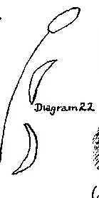
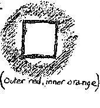

Home
16th June, 1924.
QUESTION: Has liquid manure the same force of I-organisation as dung?
RUDOLF STEINER: Of course, liquid manure and dung should be used in union with each other and both should contribute to the same force of organisation of the soil. The connection with the I to which I referred holds good particularly for the dung, but does not hold good in general for the liquid manure. For every I, even in the rudimentary form in which it appears in manure, must work in conjunction with some astral element, and the dung would have no astrality unless the liquid manure were there. The liquid is strong is astrality, the dung in I-force. The manure may be regarded as “grey matter,” while the liquid is the cerebral fluid.
QUESTION: Could we be given the correct astronomical data for those preparations which must be burnt?
ANSWER: (by Dr. Vreede): The exact data cannot be supplied at present. There are calculations still required which cannot be made at the moment. In general, the period for burning the insects is from the beginning of February on into August. With regard to the destruction of field-mice, the period this year [1924] — it shifts from year to year — would be from the second half of November to the first half of December.
DR. STEINER: The principles laid down [in 1912] for the Anthroposophical Calendar ought to be worked out more precisely. Then one could follow it exactly.
QUESTION: In speaking of Full Moon and New Moon, do you mean the one day on which the moon is full or new, or does it include the period shortly before and after it?
ANSWER: One reckons the new moon from the moment when the thin sickle of the old moon is still there and disappears. Full moon is reckoned from the moment when this other picture appears. Both phases cover from twelve to fourteen days.
QUESTION: Has the burning of the weed seeds to take place in summer, or at any time?
ANSWER: Not too long after they have been gathered
QUESTION: How can this insect-pepper which has “been scattered over the soil' affect the living insects which never come into contact with the soil?
ANSWER: What matters here is not the physical contact but a certain quality coming from this homoeopathic dose. The insect has its own kind of sensitiveness, and it will flee from what has been scattered over the ground without having to come in contact with it. That the insect does not come into direct contact with the earth makes no difference at all.
QUESTION: What is the nature of the harm done by frost in agriculture and in the case of tomatoes in particular? In what sense is frost connected with cosmic forces?
ANSWER: To have fine and large tomatoes you must keep them warm. They suffer from frost. With regard to frost in general, you must realise what it is that is active in the effects of frost. Frost means that the cosmic influence which is active in the earth has been essentially strengthened. Now this cosmic Influence has a normal mean between certain degrees of temperature. When the temperature is at a certain point, this cosmic influence is exactly what the plant requires. If, however, the frost is intense, lasts too long and strikes too deeply, the influence of the heavens upon the earth is too strong and the plant tends to become stalkified and thin throughout and in this attenuated state it falls an easy prey to the frost and is destroyed. Frost which is too intense is therefore extremely harmful to the growth of plants because it is a sign that too much of the heavens has entered into the earth.
QUESTION: Should the burnt remains of Horse-fly be used to treat the bodies of animals, or be scattered over the meadows and pastures?
ANSWER: Scatter it where the animals feed. It is to be regarded as additional to the manure.
QUESTION: What is the best way of combating couch-grass? Is it not very difficult to obtain the seeds?
ANSWER: This difficulty really solves itself. When it grows underground and rampant one can fight it. You need very little seed and you will be able to get this. Why, one can even find four-leaved clover!
QUESTION: Is it permissible to preserve bales of fodder by means of an electric current?
ANSWER: What would be your object in doing this? It is necessary at this point to consider the part played by electricity in Nature. Now it is comforting to note that in America, where people are more observant than they are here, voices are heard to say that man cannot go on developing in the same way in an atmosphere which is continuously being perforated by electrical currents and waves; it has an influence on the whole development of man. Man's inner life will become different if these things are carried further and further. It makes a difference to a district whether it is provided with steam trains or electric trains. The action of steam is more conscious: the action of electricity is extremely unconscious, so that people simply do not know how certain things happen. No doubt there is a development going on which must be reckoned with because electricity is being used above the surface of the soil as radiant electricity [wireless] and also as conducted electricity [cable] for transmitting news as quickly as possible from one place to another. The result of this will be that people living in the field especially of the wireless electricity can no longer grasp the news they hear. The electric radiations used to ensure quick transmissions tend to blot out the capacity for understanding. This can already be observed. People have far more difficulty in taking in what comes to them than they had several decades ago. It is a comfort to find that a glimpse of the truth of this matter is beginning to dawn at least from America.
Whenever anything new appears, it is usually regarded at first as a remedy. Then the prophets come in and use the thing. It is strange how when something new appears clairvoyant perception is so often brought down to the human level. For instance a person who had never before thought about it, begins to prophesy wildly regarding the healing power of electricity, and the idea is taken up not merely because electricity is there, but because it is in the fashion. Electricity in the form of radiations is no more a remedy than pricking with small thin needles can be a remedy. It is not the electricity which heals but the shock it produces.
It must not be forgotten, however, that electricity has a particularly powerful effect upon the higher organisation in living beings, i.e. upon the head in men and animals and upon the root in plants. An animal that eats food that has been preserved through electrification will therefore gradually tend to grow sclerotic. The process will be slow and will not be noticed at first. All that will be noticed is that in one way or another these animals die too soon. No one will attribute this to the electricity; all sorts of other reasons will be found. Electricity is the last thing in the world which ought to be introduced into a living being to promote its life! It cannot promote life. Electricity is at one level lower than life, and the higher the level reached by life, the more it tends to rid itself of electricity; and if you induce the living organism to take repulsive measures when there is nothing to be repelled, the organism becomes nervous and fidgety and gradually sclerotic.
QUESTION: What does Spiritual Science say on the subject of preserving food-stuffs by acidification in general?
ANSWER: If we use salt-like materials at all in this process it does not make much difference whether the salt is added at the moment of eating, or whether it is used in the preparation of the fodder. In the case of fodder that contains too little salt to carry the food stuffs to those parts of the organism where they should work, souring is the right procedure to adopt. Take the case of turnips. These, as we saw, are particularly fitted to work upon the head-organisation. They are, therefore, an excellent food for certain animals, especially for young cattle. If, however, it is noticed that the young animals shed their hair too soon and too much, their fodder should be salted because this means that the food is not being deposited in sufficient quantities in those parts of the organism where it is needed. Salt is tremendously effective in carrying food to the part of the organism where it is needed and will work.
QUESTION: What view does Spiritual Science take on the subject of souring of the leaves of sugar-beet and other green plants?
ANSWER: The great thing here is to find a certain optimum and not go beyond it by adding too much salt, because salt is the part of food which more than any other remains what it is once it is inside the organism. The organism in general, in the case of animals and even more so of human beings, is so constructed as to submit everything it absorbs to the most varied changes. It is an error to think that the albumen which goes into our stomachs remains the same as it was before we ate it. It must first be changed into a completely lifeless substance and then changed back again by means of the etheric body into specifically human - or in the case of animals specifically animal - albumen.
Everything that enters into an organism must be changed. This applies even to warmth. Suppose that this ***(see Diagram 23, Part I) is a living organism and this the warmth in the environment.

Now assume you have a piece of dead wood which, it is true, comes from a living organism but is already dead.
It is likewise surrounded by warmth. Now when the warmth enters into the living organism, it does not simply go a little way in and remain what it is; the organism immediately transforms it into a warmth of its own, and it could not do otherwise. Whereas when the warmth penetrates into the dead wood it remains exactly the same kind of warmth as exists outside in the mineral earth. The moment warmth penetrates into us unchanged as it does into the piece of wood, we catch cold. Nothing that comes into the living organism from outside may remain what it is; it must immediately be changed into something else. This process takes place to the least extent in salt. No great harm, therefore, will he done by using salt for the preserving of food-stuffs so long as you do it carefully and do not put in too much. The mere sense of taste will reject it. If it is necessary for the preservation of food-stuffs this shows that up to a point it is the right process to adopt.
QUESTION: Do you recommend souring fodder without salt?
ANSWER: That is too advanced a process. It is a super-organic process (self-fermentation) and can in certain circumstances be extremely harmful.
QUESTION: Is Spanish Chalk, sometimes used to mitigate the effects of souring, bad for the animals?
ANSWER: Some animals cannot stand it at all; they become ill. Some can. I cannot say at the moment which are those that can stand it. On the whole it does not do the animals much good and is apt to make them ill.
QUESTION: I suppose that the gastric juice will be dulled by the Spanish chalk?
ANSWER: Yes. The gastric juice becomes useless.
QUESTION: I would like to ask whether the inner attitude with which one sets to work is not of great importance in these matters? There is surely a great difference between sowing seed and scattering what is destined to work destruction. The attitude of mind must count. Does it not have an immensely greater karmic effect to work against insects in this way than to kill them in single instances by mechanical means?.
ANSWER: The main thing about an inner attitude is whether it is a good or a bad attitude. What do you mean by destruction? Now consider how one must think about these things. In my lecture today I pointed out that we can know something and then actually see it before us. We can look at a linseed plant or a carrot and actually see the course it takes and the process it undergoes when it enters the body of an animal. If we can really attain to this objective vision and make it a reality, then it is inconceivable that we should not at the same time be penetrated by certain feelings of piety. And we shall gain the impulse to do this in the service of mankind, in the service of the Universe. The only way in which our state of mind could bring harm would be if we did our work from bad motives. I do not see, therefore, since these methods work on the whole for good, that they can in any way do harm. You seem to think that it would not be so bad just to run after the animal and kill it?
QUESTION: I wanted to know if there was a difference between the two ways of destruction — mechanical and cosmic?
ANSWER: This question raises very complicated issues which can only be understood if we have gained insight into the wider connections that exist between things. Suppose you draw a fish out of the sea and kill it. Then you have killed something. You have carried out a process on a definite level. But suppose that for some reason or other you take a whole pailful of water containing quantities of fish spawn, thus destroying a vast amount of life. This is something quite different from killing one fish. The process has been carried out on quite a different level. If something in Nature passes on towards a full-grown fish, it has travelled along a certain path. If you cut the fish off at this point, you cause a certain disorder in Nature. But it is quite a different matter to arrest a process which has not been completed or which has not ended in the blind alley of a fully grown organism. Your question, therefore, boils down to this: What wrong am I doing in making this pepper? What I destroy with the pepper does not really come into consideration as it moves on another level of existence. All we need ask is: What must I have in order to make this pepper? And in most cases it turns out that in making it I shall destroy far fewer animals than if I have to collect them in some other way and then kill them. I think that if you look at the question in a practical way and less from an abstract point of view you will find that it is not so very appalling .
QUESTION: Can human faeces be used for manuring, and how should they be treated before use?
ANSWER: They should be used as little as possible. For they achieve very little in the way of manuring and they can do more harm than any other kind of manure. If, however, you want to use them the normal amount that is to be had on a farm or estate will be amply sufficient. If one knows that a given number of human beings are working on an estate, then if the human manure be added to what already comes from the animals on the estate and from other sources, clearly this will make up the maximum that can he used without doing harm. It is the greatest mistake to use human manure in the neighbourhood of large towns, because the amount supplied by a large town would suffice for an estate of gigantic size. No one would have such a crazy notion as to use on a small piece of land the human manure supplied, say, by the whole of Berlin. You need only try eating some of the plants that grow in the neighbourhood of big cities. Take asparagus or any other plant which still manages to grow fairly true to its nature and upright, and you will see what happens.
Again, if you use human manure for plants that are eaten by animals, you will have the most harmful results., For then much of what is eaten and goes through the animal's organism remains at the same stage as that at which the asparagus is arrested when it goes through the human organism. In this connection it is the grossest ignorance which has caused the greatest mischief in this field.
QUESTION: Is there any remedy for red murrain (Erysipelas) in swine?
ANSWER: This is really a veterinary question. I have never gone into the matter, as I have never been asked for advice about .it, but I rather think the best thing to do is to rub in a certain dose of antimony. This is a therapeutic question as it deals with a real disease.
QUESTION: Can one combat Wild Radish, which is a bastard species, with these peppers?
ANSWER: The peppers of which I have told you only affect the plants from which they were made. Plants which arise from symbiosis or the crossing of one plant with another cannot therefore be affected by pepper made from one of them.
QUESTION: What are your views on green manuring?
ANSWER: It has its uses, especially in connection with fruit-growing. One cannot generalise on such matters. It should be used if a powerful development of the leafy part of the plant is required. For such a purpose it can well supplement other manures.